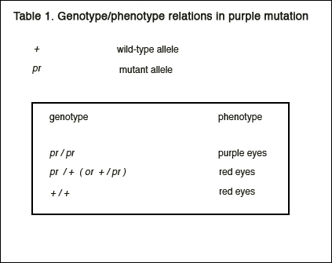
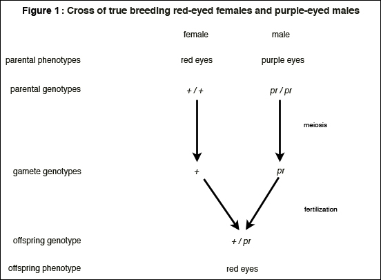

Molecular Genetics
The term molecular genetics sometimes refers to a fundamental theory alleging that genes direct all life processes through the production of polypeptides, sometimes to a more modest basic theory about the expression and regulation of genes at the molecular level, and sometimes to an investigative approach applied throughout biomedical science that is based on investigative strategies grounded in the basic theory about genes. This article briefly summarizes the basic knowledge of molecular genetics and surveys philosophical research on the subject. The survey is organized around three questions that have dominated philosophical attention: (a) Can classical genetics be reduced to molecular genetics? (b) What is a gene? and (c) What do genes do? It concludes by turning attention to a fourth question: (d) Why is so much biological research centered on genes and DNA?
- 1. Introduction
- 2. Basic Theory
- 3. Was classical genetics reduced to molecular genetics?
- 4. What is a gene?
- 4.1 Gene skepticism
- 4.2 An analysis of concepts in practice, the classical gene and molecular gene concepts
- 4.3 Analysis of reference in practice, how molecularization changed reference
- 4.4 A proposal for a new concept, the process molecular gene concept
- 4.5 Using a survey-based approach to identifying gene concepts
- 4.6 A pragmatic response to gene skepticism
- 5. What do genes and DNA do?
- 5.1 Criticism of idea that genes and DNA provide the information
- 5.2 Using a broadly biological concept of information to explain what genes do
- 5.3 A causal interpretation of claims about what genes do
- 5.4 Causal accounts of how DNA programs development
- 5.5 Fundamental theorizing versus investigative pragmatics
- 6. Why is so much biological research centered on genes and DNA?
- 7. Conclusion
- Bibliography
- Academic Tools
- Other Internet Resources
- Related Entries
1. Introduction
The term molecular genetics is now redundant because contemporary genetics is thoroughly molecular. Genetics is not made up of two sciences, one molecular and one non-molecular. Nevertheless, practicing biologists still use the term. When they do, they are typically referring to a set of laboratory techniques aimed at identifying and/or manipulating DNA segments involved in the synthesis of important biological molecules. Scientists often talk and write about the application of these techniques across a broad swath of biomedical sciences. For them, molecular genetics is an investigative approach that involves the application of laboratory methods and research strategies. This approach presupposes basic knowledge about the expression and regulation of genes at the molecular level.
Philosophical interest in molecular genetics, however, has centered, not on investigative approaches or laboratory methods, but on theory. Early philosophical research concerned the basic theory about the make-up, expression, and regulation of genes. Most attention centered on the issue of theoretical reductionism. The motivating question concerned whether classical genetics, the science of T. H. Morgan and his collaborators, was being reduced to molecular genetics. With the rise of developmental genetics and developmental biology, philosophical attention has subsequently shifted towards critiquing a fundamental theory associated with contemporary genetics. The fundamental theory concerns not just the make-up, expression, and regulation of genes, but also the overall role of genes within the organism. According to the fundamental theory, genes and DNA direct all life processes by providing the information that specifies the development and functioning of organisms.
This article begins by providing a quick review of the basic theory associated with molecular genetics. Since this theory incorporates ideas from the Morgan school of classical genetics, it is useful to sketch its development from Morgan's genetics. After reviewing the basic theory, I examine four questions driving philosophical investigations of molecular genetics. The first question asks whether classical genetics has been or will be reduced to molecular genetics. The second question concerns the gene concept and whether it has outlived its usefulness. The third question regards the tenability of the fundamental theory. The fourth question, which hasn't yet attracted much philosophical attention, asks why so much biological research is centered on genes and DNA.
2. Basic Theory
2.1 The basic theory of classical genetics
The basic theory associated with classical genetics provided explanations of the transmission of traits from parents to offspring. Morgan and his collaborators drew upon a conceptual division between the genetic makeup of an organism, termed its genotype, and its observed manifestation called its phenotype (see the entry on the genotype/phenotype distinction). The relation between the two was treated as causal: genotype in conjunction with environment produces phenotype. The theory explained the transmission of phenotypic differences from parents to offspring by following the transmission of gene differences from generation to generation and attributing the presence of alternative traits to the presence of alternative forms of genes.
I will illustrate the classical mode of explanatory reasoning with a simple historical example involving the fruit fly Drosophila melanogastor. It is worth emphasizing that the mode of reasoning illustrated by this historical example is still an important mode of reasoning in genetics today, including what is sometimes called molecular genetics.
Genes of Drosophila come in pairs, located in corresponding positions on the four pairs of chromosomes contained within each cell of the fly. The eye-color mutant known as purple is associated with a gene located on chromosome II. Two copies of this gene, existing either in mutated or normal wild-type form, are located at the same locus (corresponding position) in the two second-chromosomes. Alternative forms of a gene occurring at a locus are called alleles. The transmission of genes from parent to offspring is carried out in a special process of cellular division called meiosis, which produces gamete cells containing one chromosome from each paired set. The half set of chromosomes from an egg and the half set from a sperm combine during fertilization, which gives each offspring a copy of one gene from each gene pair of its female parent and a copy of one gene from each gene pair of its male parent.
Explanations of the transmission of traits relate the presence of alternative genes (genotype) to the presence of alternative observable traits (phenotype). Sometimes this is done in terms of dominant/recessive relations. Purple eye-color, for example, is recessive to the wild-type character (red eye-color). This means that flies with two copies of the purple allele (the mutant form of the gene, which is designated pr) have purple eyes, but heterozygotes, flies with one copy of the purple allele and one copy of the wild-type allele (designated +), have normal wild-type eyes (as do flies with two copies of the wild-type allele). See Table 1.

To see how the classical theory explains trait transmission, consider a cross of red-eyed females with purple-eyed males that was carried out by Morgan's collaborators. The offspring all had red eyes. So the trait of red eyes was passed from the females to all their offspring even though the offspring's male parents had purple eyes. The classical explanation of this inheritance pattern proceeds, as do all classical explanations of inheritance patterns, in two stages.
The first stage accounts for the transmission of genes and goes as follows (Figure 1): each offspring received one copy of chromosome II from each parent. The maternally derived chromosomes must have contained the wild-type allele (since both second-chromosomes of every female parent used in the experiment contained the wild-type allele -- this was known on the basis of previous experiments). The paternally derived chromosomes must have contained the purple allele (since both second-chromosomes of every male parent contained the purple allele -- this was inferred from the knowledge that purple is recessive to red eye-color). Hence, all offspring were heterozygous (pr / +). Having explained the genetic makeup of the progeny by tracing the transmission of genes from parents to offspring, we can proceed to the second stage of the explanation: drawing an inference about phenotypic appearances. Since all offspring were heterozygous (pr / +), and since purple is recessive to wild-type, all offspring had red eye-color (the wild-type character). See Figure 1.

Notice that the reasoning here does not depend on identifying the material make-up, mode of action, or general function of the underlying gene. It depends only on the ideas that copies of the gene are distributed from generation to generation and that the difference in the gene (i.e., the difference between pr and +), whatever this difference is, causes the phenotypic difference. The idea that the gene is the difference maker needs to be qualified: differences in the gene cause phenotypic differences in particular genetic and environmental contexts. This idea is so crucial and so often overlooked that it merits articulation as a principle (Waters 1994):
Difference principle: differences in a classical gene cause uniform phenotypic differences in particular genetic and environmental contexts.
It is also worth noting that the difference principle provides a means to explain the transmission of phenotypic characteristics from one generation to the next without explaining how these characteristics are produced in the process of an organism's development. This effectively enabled classical geneticists to develop a science of heredity without answering questions about development.
The practice of classical genetics included the theoretical analysis of complicated transmission patterns involving the recombination of phenotypic traits. Analyzing these patterns yielded information about the basic biological processes such as chromosomal mechanics as well as information about the linear arrangement of genes in linkage groups. These theoretical explanations did not depend on ideas about what genes are, how genes are replicated, what genes do, or how differences in genes bring about differences in phenotypic traits.
2.2 Molecular-level answers to questions left behind by classical genetics
Research in molecular biology and genetics has yielded answers to the basic questions left unanswered by classical genetics about the make-up of genes, the mechanism of gene replication, what genes do, and the way that gene differences bring about phenotypic differences. These answers are couched in terms of molecular level phenomena and they provide much of the basic theory associated with molecular genetics.
What is a gene? This question is dealt with at further length in section 4 of this article, but a quick answer suffices for present purposes: genes are linear sequences of nucleotides in DNA molecules. Each DNA molecule consists of a double chain of nucleotides. There are four kinds of nucleotides in DNA: guanine, cytosine, thymine, and adenine. The pair of nucleotide chains in a DNA molecule twist around one another in the form of a double helix. The two chains in the helix are bound by hydrogen bonds between nucleotides from adjacent chains. The hydrogen bonding is specific so that a guanine in one chain is always located next to cytosine in the adjacent chain (and vice-versa) and thymine in one chain is always located next to adenine (and vice-versa). Hence, the linear sequence of nucleotides in one chain of nucleotides in a DNA molecule is complimentary to the linear sequence of nucleotides in the other chain of the DNA molecule. A gene is a segment of nucleotides in one of the chains of a DNA molecule. Of course, not every string of nucleotides in DNA is a gene; segments of DNA are identified as genes according to what they do (see below).
How are genes replicated? The idea that genes are segments in a DNA double helix provides a straightforward answer to this question. Genes are faithfully replicated when the paired chains of a DNA molecule unwind and new chains are formed along side the separating strands by the pairing of complementary nucleotides. When the process is complete, two copies of the original double helix have been formed and hence the genes in the original DNA molecule have been effectively replicated.
What do genes do? Roughly speaking, genes serve as templates in the synthesis of RNA molecules. The result is that the linear sequence of nucleotides in a newly synthesized RNA molecule corresponds to the linear sequence of nucleotides in the DNA segment used as the template. Different RNA molecules play different functional roles in the cell, and many RNA molecules play the role of template in the synthesis of polypeptide molecules. Newly synthesized polypeptides are linear sequences of amino acids that constitute proteins and proteins play a wide variety of functional roles in the cell and organism (and environment). The ability of a polypeptide to function in specific ways depends on the linear sequence of amino acids of which it is formed. And this linear sequence corresponds to the linear sequence of triplets of nucleotides in RNA (codons), which in turn corresponds to the linear sequence of nucleotides in segments of DNA, and this latter segment is the gene for that polypeptide.
How do differences in genes bring about differences in phenotypic traits? The modest answer given above to the question ‘What do genes do?’ provides the basis for explaining how differences in genes can bring about differences in phenotypic traits. A difference in the nucleotide sequence of a gene will result in the difference in the nucleotide sequence of RNA molecules, which in turn can result in a difference in the amino acid sequence of a polypeptide. Differences in the linear sequences of amino acids in polypeptides (and in the linear sequences of nucleotides in functional RNA molecules) can affect the roles they play in the cell and organism, sometimes having an effect that is observable as a phenotypic difference. The mutations (differences in genes) identified by the Morgan group (e.g., the purple mutation) have been routinely identified as differences in nucleotide sequences in DNA.
2.3 Distinguishing between basic and fundamental theories of molecular genetics
The modest answer to the question ‘What do genes do?’ is that they “code for” or “determine” the linear sequences in RNA molecules and polypeptides synthesized in the cell. (Even this modest answer needs to be qualified because RNA molecules are often spliced and edited in ways that affect the linear sequence of amino acids in the eventual polypeptide product.) But biologists have offered a far less modest answer as well. The bolder answer is part of a sweeping, fundamental theory. According to this theory, genes are “fundamental” entities that “direct” the development and functioning of organisms by “producing” proteins that in turn regulate all the important cellular processes. It is often claimed that genes provide “the information”, “the blueprint”, or “the program” for an organism. It is useful to distinguish this sweeping, fundamental theory about the allegedly fundamental role of genes from the modest, basic theory about what genes do with respect to the synthesis of RNA and polypeptides.
3. Was classical genetics reduced to molecular genetics?
Philosophers of science have been intrigued by ideals of reductionism and the grand scheme that all science will one day be “reduced” to a universal science of fundamental physics (see the entry on inter-theory relations in physics) for philosophical and scientific concepts of reductionism in the context of physical science). Philosophical reductionists believe that scientific knowledge progresses when higher-level sciences (e.g., chemistry) are reduced to lower-level sciences (e.g., physics). The so-called received view of scientific knowledge, codified in Nagel (1961) and Hempel (1966), promoted reductionism as a central ideal for science, and confidently asserted that much progress had been made in the reduction of chemistry to physics. Nagel constructed a formal model of reduction and applied it to illuminate how the science of thermodynamics, which was couched in terms of higher-level concepts such as pressure and temperature, was allegedly reduced to statistical mechanics, couched in terms of the lower-level concepts of Newtonian dynamics such as force and mean kinetic energy. In 1969, Schaffner claimed that the same kind of advance was now taking place in genetics, and that the science of classical genetics was being reduced to an emerging science of “molecular genetics.” Schaffner's claim, however, was quickly challenged by Hull. Other philosophers of biology developed Hull's anti-reductionist arguments and a near consensus developed that classical genetics was not and would not be reduced to molecular genetics. Although the philosophical case for anti-reductionism has been challenged, many philosophers still assume that the anti-reductionist account of genetics provides an exemplar for anti-reductionist analyses of other sciences.
3.1 Schaffner's thesis that classical genetics is being theoretically reduced
Reductionism has many meanings. For example, the phrase genetic reductionism concerns the idea that all biological phenomena are caused by genes, and hence presupposes an ontological sense of reductionism according to which one kind of micro-entity (in this case, gene) exclusively causes a variety of higher-level phenomena (in this case, biological features, cultural phenomena, and so forth). But this is not the meaning of reductionism at issue in the philosophical literature about the reduction of classical genetics. This literature is more concerned with epistemology than metaphysics. The concept of reductionism at issue is Nagel's concept of theoretical reduction. (See Sarkar 1992 and Schaffner 1993 for discussions of alternative conceptions of reduction.) According to Nagel's concept, the reduction of one science to another science entails the reduction of the central theory of one science to the central theory of the other. Nagel believed that this kind of theoretical reduction led to progressive changes in scientific knowledge. He formulated two formal requirements for theoretical reductions.
Nagel's first formal requirements was that the “laws” of the reduced theory must be derivable from the laws and associated coordinating definitions of the reducing theory. This deducibility requirement was intended to capture the idea that the explanatory principles (or laws) of the reducing theory ought to explain the explanatory principles (or laws) of the reduced theory. Nagel's second formal requirement, the connectability requirement, was that all essential terms of the reduced theory must either be contained within or be appropriately connected to the terms of the reducing theory by way of additional assumptions. The connectability requirement is presupposed by the derivability requirement, but making it explicit helps emphasize an important task and potential stumbling block for carrying out theoretical reduction.
Schaffner (1969) modified Nagel's model by incorporating the idea that what the reducing theory actually derives (and hence explains) is a corrected version of the reduced theory, not the original theory. He argued that this revised model better captured reductions in the physical sciences. He claimed his revised model could also be used to show how a corrected version of classical genetics was being reduced to a new theory of physicochemical science called molecular genetics. Hull (1974) countered that classical genetics was not being reduced, at least not according to the model of reduction being applied by Schaffner. Hull argued that genetics did not exemplify Nagelian reduction because the fundamental terms of classical genetics could not be suitably connected to expressions couched in terms of DNA.
3.2 The Anti-reductionist consensus about genetics
Most philosophers writing on genetics and reductionism have argued that molecular genetics has not and will not reduce classical genetics (e.g., see Wimsatt 1976a, Darden and Maull 1977, Kitcher 1984, Rosenberg 1985 and 1994, Dupré 1993, and Burian 1996). Two objections to Schaffner's reductionist thesis have been most persuasive: the unconnectability objection and the gory details objection. The unconnectability objection claims that the terminology of classical genetics cannot be redefined at the molecular level in terms of DNA. This objection effectively claims that Nagel's second formal requirement, the connectability requirement, cannot be satisfied. The gory details objection alleges that molecular genetics cannot and will not explain classical genetics or better explain the phenomena that are already explained by the classical theory. This objection relates to Nagel's first formal requirement, the derivability requirement. But the gory details objection goes philosophically deeper because it implies that even if the explanatory principles of classical genetics could be derived from the explanatory principles of molecular genetics, the derivations would not be explanatory.
The most rigorous formulation of the unconnectability objection can be found in the early writings of Rosenberg who once contended that there is an unbridgeable conceptual gap between the classical and molecular theories of genetics (1985, 1994). In support of this contention, Rosenberg argued that relations between the gene concept of classical genetics and the concepts of molecular genetics are hopelessly complicated “many-many” relations that will forever frustrate any attempt to systematically connect the two theories. Rosenberg began his analysis by pointing out that in classical genetics, genes are identified by way of their phenotypic effects. Classical geneticists identified the gene for purple eye-color, for example, by carrying out carefully orchestrated breeding experiments and following the distribution of eye-color phenotypes in successive generations of a laboratory population. The reason classical genetics will never be reduced to a molecular-level science, according to Rosenberg (1985), is that there is no manageable connection between the concept of a Mendelian phenotype and that of a molecular gene:
The pathway to red eye pigment production begins at many distinct molecular genes and proceeds through several alternative branched pathways. … The pathway from the [molecular] genes also contains redundant, ambiguous, and interdependent paths. If we give a biochemical characterization of the gene for red eye color either by appeal to the parts of its pathway of synthesis, or by appeal to the segments of DNA that it begins with, our molecular description of this gene will be too intricate to be of any practical explanatory upshot. (Rosenberg 1985, p. 101)
Rosenberg concluded that since the relation between molecular genes and Mendelian phenotypes is exceedingly complex, the connection between any molecular concept and the Mendelian gene concept must also be exceedingly complex, thereby blocking any systematic, reductive explanation of classical genetics in terms of molecular-level theory.
The gory details objection can be traced back to the writings of Putnam (1965) and Fodor (1968) who argued against reductionism of the mental on the basis that psychological functons are multiply-realized. This objection against reductionism was further developed in the context of genetics, most thoroughly by Kitcher (e.g., see Kitcher 1984, 1999, 2001). Following Hull, Kitcher assumes that classical genetics is transmission genetics. The classical theory, according to Kitcher, explains the transmission of phenotypic traits, not the development of phenotypic traits in individual organisms. And transmission phenomena, on Kitcher's account, are best explained at the level of cytology: “The distribution of genes to gametes is to be explained, not by rehearsing the gory details of the reshuffling of the molecules, but through the observation that chromosomes are aligned in pairs just prior to the meiotic division, and that one chromosome from each matched pair is transmitted to each gamete.” (Kitcher 1984, p. 370). Kitcher suggests that the pairing and separation of chromosomes belong to a natural kind of pair separation processes which are heterogeneous from the molecular perspective because different kinds of forces are responsible for bringing together and pulling apart different paired entities. The separation of paired entities, he claims, “may occur because of the action of electromagnetic forces or even nuclear forces; but it is easy to think of examples in which the separation is effected by the action of gravity.” (Kitcher 1984, p. 350)
The image of genetics that emerges from the anti-reductionist literature is of a two-tiered science composed of two discreet theoretical discourses, one grounded in principles about entities at the cytological level (such as chromosomes) and the other grounded in principles about entities at the molecular level (such as nucleotide sequences in DNA). Anti-reductionists believe some phenomena, including transmission of genes, are best explained by a theory grounded at the cytological level and other phenomena, including the expression of genes, are best explained by a theory grounded at the molecular level. Although Kitcher argues that classical genetics provides the best explanation in an objective sense, some anti-reductionists (e.g., Rosenberg 1985, 1994) believe that the obstacles to reduction are merely practical. Rosenberg (1985, 1994) appealed to the concept of supervenience to argue that in principle, molecular genetics would provide the best explanations. But he argued that in practice, classical genetics provides the “best” explanation of transmission phenomena, in the sense that this is the best explanation available to creatures with our cognitive limitations. Subsequently, however, Rosenberg changed his position on this issue, largely on the grounds that that technological advances in information storage and processing "may substantially enhance our capacity to understand macromolecular processes and their combinations" (Rosenberg 2006, p. 14).
Despite philosophically significant differences in their views about the ultimate basis of the irreducibility of classical genetics, the image of biological knowledge that emerges from the antireductionists' writings is similar. The biological world consists of different domains of phenomena and each domain is best explained at a particular level of theoretical discourse. Hence, the ideal structure for biology is akin to a layer-cake, with tiers of theories, each of which provides the best possible account of its domain of phenomena. Biological sciences such as classical genetics that are couched in terms of higher levels of organization should persist, secure from the reductive grasp of molecular science, because their central theories (or patterns of reasoning) explain domains of phenomena that are best explained at levels higher than the molecular level.
3.3 Challenges to the anti-reductionist consensus
The anti-reductionist consensus has not gone unchallenged (see Sarkar 1989, 1992 and 1998, Schaffner 1993, and Waters 1990 and 2000). According to critics, the chief objections supporting the consensus are mistaken. The unconnectability objection rests on the assumption that classical genetics took the relationships between genes and phenotypic traits to be simple one-to-one relationships. But classical geneticists knew better. Consider what Sturtevant, one of Morgan's star students and collaborators, had to say about genes and eye color:
The difference between normal red eyes and colorless (white) ones in Drosophila is due to a difference in a single gene. Yet red is a very complex color, requiring the interaction of at least five (and probably of very many more) different genes for its production. And these genes are quite independent, each chromosome bearing some of them. Moreover, eye-color is indirectly dependent upon a large number of other genes such as those on which the life of the fly depends. We can then, in no sense identify a given gene with the red color of the eye, even though there is a single gene differentiating it from the colorless eye. So it is for all characters … (my emphasis, quoted from Carlson 1988, p. 69)
This quotation suggests that the relationship between gene and eye-color in classical genetics exhibited the same complexity that Rosenberg discussed at the molecular level (compare this quotation to the passage from Rosenberg 1985 quoted in section 3.2). According to this critique of the unconnectability objection, it is not the case that genotype-phenotype relationships appear simple and uniform at the level of classical genetics and complicated and dis-unified at the molecular level. The situation appears similarly complex at both levels of analysis (Waters 1990).
Classical genetics nevertheless finds a simple way to explain transmission phenomena by appealing to the difference principle, according to which particular differences in particular genes cause particular differences in phenotypic traits in particular contexts (see section 2.1). Sturtevant alludes to this principle in the first sentence of the quotation above and again in the emphasized clause. So the question arises, can this relationship be captured at the molecular level? And the answer is yes. The differences used by classical geneticists to explain inheritance patterns have been routinely identified at the molecular level by contemporary geneticists.
According to this critique, the gory details objection also fails. This objection claims that biologists cannot improve upon the classical explanations of transmission phenomena by citing molecular details. The cytological level allegedly provides the best level of explanation because explanations at this level uniformly account for a wide range of cases that would look heterogeneous from a molecular perspective. Consider Kitcher's formulation of this objection. Kitcher believes that to explain is to unify (1989). It follows that the best explanation of a class of phenomena is the explanation that accounts for the class in a uniform way. Kitcher claims meiosis exemplifies this kind of situation. The uniformity of pair-separation processes is evident at the cytological level, but is lost in the gory details at the molecular level where the process “may occur because of the action of electromagnetic forces or even of nuclear forces …” (Kitcher 1984, p. 350). But it is unclear what Kitcher could have in mind. The molecular mechanisms underlying the pairing and separation of chromosomes are remarkably uniform in creatures ranging from yeast to human beings; it is not the case that some involve electromagnetic forces and others involve nuclear forces. Kitcher's claim that “it is easy to think of examples in which the separation is effected by the action of gravity” has no basis in what molecular biologists have learned about the pairing and separation of chromosomes.
Meiosis is an unpromising candidate to illustrate the idea that what appears uniform at the level of classical genetics turns out to be heterogeneous at the molecular level. But this idea is illustrated by other genetic phenomena. Consider the phenomenon of genetic dominance. In classical genetics, all examples of complete dominance are treated alike for the purposes of explaining transmission phenomena. But contemporary genetics reveals that there are several very different mechanisms underlying different instances of dominance. According to Kitcher's unificationist theory of scientific explanation, the classical account of dominance provides an objectively better basis for explaining transmission phenomena because it provides a more unified organization of the phenomena. But this would imply that the shallow explanations of classical genetics are objectively preferable to the deeper explanations provided by the molecular theory (Waters 1990).
3.4 Moving beyond theoretical reduction and layer-cake antireductionism
Although Nagel's concept of theoretical reduction marks a common starting point for discussions about the apparent reduction of classical genetics, much of the literature on reduction is aimed at seeking a better understanding of the nature of reduction by seeking to replace Nagel's concept with a more illuminating one. This is true of the anti-reductionists, who seek to clarify why molecular genetics cannot reduce classical genetics, as well as those who have been more sympathetic to reductionism. Hence, there are two levels of discourse in the literature examining the question of whether molecular genetics is reducing classical genetics. One level concerns what is happening in the science of genetics. The other concerns more abstract issues about the nature of (epistemological) reduction.
The abstract level of discourse began with Schaffner's idea that what is reduced is not the original theory, but rather a corrected version of the original theory. Wimsatt (1976a) offers a more ambitious modification. He rejects the assumption that scientific theories are sets of law-like statements and that explanations are arguments in which the phenomena to-be-explained are derived from laws. Instead of relying on these assumptions, Wimsatt uses Salmon's account of explanation (Salmon 1971) to examine claims that molecular genetics offered reductive explanations. Kitcher (1984) also rejects the account of theorizing underlying Nagel's concept of reduction. He constructs a new concept of reductive explanation based on his own idea of what effectively constitutes a scientific theory and his unificationist account of scientific explanation (1989). Likewise, Sarkar (1998) rejects the account of theories and explanation presupposed in Nagel's concept of reduction. In fact, he explicitly avoids relying on any particular account of scientific theories or theoretical explanation. Instead, he assumes that reductive explanations are explanations without specifying what an explanation is, and then seeks to identify the features that set reductive explanations apart from other explanations.
Wimsatt, Kitcher, and Sarkar seek to replace Nagel's conception of reduction with a conception that does not assume that scientic explanation involves subsumption under universal laws. Weber (2005), however, seeks to replace Nagel's conception with one that retains the idea that reductive explanation involves subsumption under laws of the reducing science. What Weber rejects is the idea that reductionism in biology involves explaining higher-level biological laws. He argues that, with some rare exceptions, biological sciences don't have laws. He contends that reductionism in biology involves explaining biological phenomena directly in terms of physical laws. Hence, he rejects the "layer-cake" conception of reduction implicit in Nagel's account.
The literature about reduction and molecular genetics has influenced philosophers' thinking about reduction in other sciences. For example, Kitcher's concept of reduction, which he uses to explain why molecular genetics cannot reduce classical genetics, has subsequently been employed by Hardcastle (1992) in her examination of the relationship between psychology and neuroscience. On the other side, Sober develops and extends the criticism of Kitcher's gory details objection (section 3.3) by re-examining the arguments of Putnam (1967, 1975) and Fodor (1968, 1975) on multiple-realizability.
Sober (1999) argues that higher-level sciences can describe patterns invisible at lower level, and hence might offer more general explanations. But he insists that description should not be confused with explanation. He maintains that although physics might not be able to describe all the patterns, it can nevertheless explain any singular occurrence that a higher-level science can explain. Higher-level sciences might provide more "general" explanations, but physics provides "deeper" ones. He suggests that which explanation is better is in the eye of the beholder. He concludes that
… reductionists might want to demure on this question of better and worse, and try to build on the bare proposition that physics in principle can explain wny singular occurrence that a higher-level science is able to explain. … For reductionists, the interesting feature of physical explanations of social, psychological, and biological phenomena is that they use the same basic theoretical machinery that is used to explain phenomena that are nonsocial, nonpsychological, and nonbiological (Sober 1999, pp. 560-1).
The discussion has gone full circle. The multiple-realizability argument being criticized by Sober was based on abstract considerations in the context of philosophy of mind. Philosophers of biology drew on this literature to construct the gory details objection against the idea that molecular genetics is reducing classical genetics. Other philosophers argued that this objection did not stand up to a careful analysis of the concrete situation in genetics. Sober has developed lessons from the discussion about genetics to critique the original anti-realizability argument and draw general conclusions about reductionism.
Wimsatt's writings on reduction (1976a, 1976b, and 1979) emphasize the fruitfulness of attempting to achieve a reduction, even when a reduction is not achieved. He argues, for instance, that efforts to discover the molecular make-ups of entities identified at higher levels is often fruitful, even when identities between levels cannot be found. In addition, Wimsatt points out that the “costs” of working out reductive explanations of the many particulars already explained at a higher level are relevant to the question of why there is not a full-scale replacement of higher level explanations with lower level ones. Perhaps the fact that molecular genetics has not replaced classical genetics can be explained on the basis of high costs rather than lack of epistemic merit.
While Schaffner still maintains that molecular genetics can in principle reduce classical genetics, he has conceded that attempts to carry out the reduction would be “peripheral” to the advance of molecular genetics. One might respond, along the lines of Hull (1977), that the success of molecular genetics seems to be reductive in some important sense. Hence, the failure to illuminate this success in terms of reduction reveals a conceptual defiency. That is, one might argue that Schaffner's peripherality thesis indicates that his conception of reduction is not the epistemically relevant one because it cannot illuminate the fruitfulness of reductive inquiry in molecular genetics.
In fact, a general shortcoming in the debate about the reduction of classical genetics is that it concerns only a fragment of scientific reasoning. It is based almost exclusively on an analysis of explanatory or theoretical reasoning and largely ignores investigative reasoning. The philosophical literature on the alleged reduction of classical genetics focuses on how geneticists explain or try to explain phenomena, not how they manipulate or investigate phenomena. This is even true of Wimsatt's (1976a) account of heuristics, which stress heuristics for explanation.
Vance (1996) offers a more thorough shift in attention from theory to investigative practice. He asserts that there is only one contemporary science of genetics and describes how investigative methods of classical genetics are an essential part of the methodology of what is called molecular genetics. He concludes that reductionism fails because contemporary genetics still depends on methods of classical genetics involving breeding experiments. Vance's picture of genetics is compelling. The laboratory methods of classical genetics do indeed persist, even as they are greatly extended, augmented, and often replaced by techniques involving direct intervention on DNA. But Vance's picture does not match the anti-reductionist image of a two-tiered science and the contention that classical genetics will remain aloof from the reductive grasp of molecular biology.
A different image emerges from viewing genetics as an investigative science involving an interplay of methodological and explanatory reasoning (Waters 2004a). This image is not of a two-tiered science, one (classical genetics) aimed at investigating and explaining transmission phenomena and another (molecular genetics) aimed at investigating and explaining developmental phenomena. Instead, there is one science that retains much of the investigative and explanatory reasoning of classical genetics by re-conceptualizing its theoretical basis in molecular terms and by retooling its basic investigative approach by integrating methodologies of classical genetics with physically-based methods of biochemistry and new methods based on recombinant DNA and RNA interference technologies.
4. What is a gene?
A common claim in the philosophical literature about molecular genetics is that genes cannot be conceived at the molecular level. Of course, philosophers do not deny that biologists use the term gene, but many philosophers believe gene is a dummy term, a placeholder for many different concepts. Different responses to gene skepticism illustrate a variety of philosophical aims and approaches. One kind of response is to analyze explanations closely tied to experimental practice (rather than sweeping generalizations of a fundamental theory) in order to determine whether there are uniform patterns of reasoning about genes that could (a) be codified into clear concepts, and/or (b) used to establish the reference of the term. Another kind of response is to propose new gene concepts that will better serve the expressed aims of practicing biologists. A third kind of response is to implement survey analysis, rather than conduct traditional methods of philosophical analysis. A fourth kind of response is to embrace the (allegedly) necessary vagueness of the gene concept(s) and to examine why use of the term gene is so useful.
4.1 Gene skepticism
Gene skeptics claim that there is no coherence to the way gene is used at the molecular level and that this term does not designate a natural kind; rather, gene is allegedly used to pick out many different kinds of units in DNA. DNA consists of “coding” regions that are transcribed into RNA, different kinds of regulatory regions, and in higher organisms, a number of regions whose functions are less clear and perhaps in cases non-existent. Skepticism about genes is based in part on the idea that the term is sometimes applied to only parts of a coding region, sometimes to an entire coding region, sometimes to parts of a coding region and to regions that regulate that coding region, and sometimes to an entire coding region and regulatory regions affecting or potentially affecting the transcription of the coding region. Skeptics (e.g., Burian 1986, Portin 1993, and Kitcher 1992) have concluded, as Kitcher succinctly puts it: “a gene is whatever a competent biologist chooses to call a gene” (Kitcher 1992, p. 131).
Biological textbooks contain definitions of gene and it is instructive to consider one in order to show that the conceptual situation is indeed unsettling. The most prevalent contemporary definition is that a gene is the fundamental unit that codes for a polypeptide. One problem with this definition is that it excludes many segments that are typically referred to as genes. Some DNA segments code for functional RNA molecules that are never translated into polypeptides. Such RNA molecules include transfer RNA, ribosomal RNA, and RNA molecules that play regulatory and catalytic roles. Hence, this definition is too narrow.
Another problem with this common definition is that it is based on an overly simplistic account of DNA expression. According to this simple account, a gene is a sequence of nucleotides in DNA that is transcribed into a sequence of nucleotides making up a messenger RNA molecule that is in turn translated into sequence of amino acids that forms a polypeptide. (Biologists talk as if genes “produce the polypeptide molecules” or “provide the information for the polypeptide”.) The real situation of DNA expression, however, is often far more complex. For example, in plants and animals, many mRNA molecules are processed before they are translated into polypeptides. In these cases, portions of the RNA molecule, called introns, are snipped out and the remaining segments, called exons, are spliced together before the RNA molecule leaves the cellular nucleus. Sometimes biologists call the entire DNA region, that is the region that corresponds to both introns and exons, the gene. Other times, they call only the portions of the DNA segment corresponding to the exons the gene. (This means that some DNA segments that geneticists call genes are not continuous segments of DNA; they are collections of discontinuous exons. Geneticists call these split genes.) Further complications arise because the splicing of exons in some cases is executed differentially in different tissue types and at different developmental stages. (This means that there are overlapping genes.) The problem with the common definition that genes are DNA segments that “code for polypeptides” is that the notion of “coding for a polypeptide” is ambiguous when it comes to actual complications of DNA expression. Gene skeptics argue that it is hopelessly ambiguous (Burian 1986, Fogle 1990 and 2000, Kitcher 1992, and Portin 1993).
Clearly, this definition, which is the most common and prominent textbook definition, is too narrow to be applied to the range of segments that geneticists commonly call genes and too ambiguous to provide a single, precise partition of DNA into separate genes. Textbooks include many definitions of the gene. In fact, philosophers have often been frustrated by the tendency of biologists to define and use the term gene in a number of contradictory ways in one and the same textbook. After subjecting the alternative definitions to philosophical scrutiny, gene skeptics have concluded that the problem isn't simply a lack of analytical rigor. The problem is that there simply is no such thing as a gene at the molecular level. That is, there is no single, uniform, and unambiguous way to divide a DNA molecule into different genes. Gene skeptics have often argued that biologists should couch their science in terms of DNA segments such exon, intron, promotor region, and so on, and dispense with the term gene altogether (most forcefully argued by Fogle 2000).
4.2 An analysis of concepts in practice, the classical gene and molecular gene concepts
It has been argued, against gene skepticism, that biologists have a coherent, precise, and uniform way to conceive of genes at the molecular level. The analysis underlying this argument begins by distinguishing between two different ways contemporary geneticists think about genes. Classical geneticists often conceived of genes as the functional units in chromosomes, differences in which cause differences in phenotypes. Today, in contexts where genes are identified by way of observed phenotypic differences, geneticists still conceive of genes in this classical way, as the functional units in DNA whose differences are causing the observed differences in phenotypes. This way of conceiving of genes is called the classical gene concept (Waters 1994). But contemporary geneticists also think about genes in a different way by invoking a molecular-level concept. The molecular gene concept stems from the idea that genes are units in DNA that function to determine linear sequences in molecules synthesized via DNA expression. According to this analysis, both concepts are at work in contemporary geneticists. Moss 2003 also distinguishes between two contemporary gene concepts, which he calls “genes-P (preformationist)” and “genes-D (developmental)”. He argues that conflation of these concepts leads to erroneous thinking in genetics.
Much confusion concerning the classical way to think about genes is due to the fact that geneticists have sometimes talked as if classically conceived genes are for gross phenotypic characters (phenotypes) or as if individual genes produce phenotypes. This talk was very misleading on the part of classical geneticists and continues to be misleading in the context of contemporary genetics. The production of a gross phenotypic character, such as purple eye-color, involves all sorts of genetic and extra-genetic factors including various cellular enzymes and structures, tissue arrangements, and environmental factors. In addition, it is not clear what, if any, gross phenotypic level functions can be attributed to individual genes. For example, it is no clearer today than it was in Morgan's day that the function of the purple gene discussed in section 2.1 is to contribute to the production of eye color. Mutations in this gene affect a number of gross phenotypic level traits. Legitimate explanatory reasoning invoking the classical gene concept does not depend on any baggage concerning what genes are for or what function a gene might have in development. What the explanatory reasoning depends on is the difference principle, that is, the principle that some difference in the gene causes certain phenotypic differences in particular genetic and environmental contexts (section 2.1). Many gene-based explanations in contemporary biology are best understood in terms of the classical gene concept and the difference principle.
Perhaps the reason gene skeptics overlooked the molecular gene concept is that they were searching for the wrong kind of concept. The concept is not a purely physicochemical concept, and it does not provide a single partition of DNA into separate genes. Instead, it is a functional concept that provides a uniform way to think about genes that can be applied to pick out different DNA segments in different investigative or explanatory contexts. The basic molecular concept, according to this analysis, is the concept of a gene for a linear sequence in a product of DNA expression:
A gene g for linear sequence l in product p synthesized in cellular context c is a potentially replicating nucleotide sequence, n, usually contained in DNA, that determines the linear sequence l in product p at some stage of DNA expression (Waters 2000)
The concept of the molecular gene can be presented as a 4-tuple: <n,l,p,c >. This analysis shows how geneticists can consistently include introns as part of a gene in one epistemic context and not in another. If the context involves identifying a gene for a primary, preprocessed RNA molecule, then the gene includes the introns as well as the exons. If the context involves identifying the gene for the resulting polypeptide, then the gene includes only the exons. Hence, in the case of DNA expression that eventually leads to the synthesis of a given polypeptide, geneticists might talk as if “the” gene included the intron (in which case they would be referring to the gene for the primary, preprocessed RNA) and yet also talk as if “the” gene excluded the introns (in which case they would be referring to the gene for the mature RNA or polypeptide). Application of the molecular gene concept is not ambiguous; in fact, it is remarkably precise provided one specifies the values for the variables in the expression “gene for linear sequence l in product p synthesized in cellular context c.”
Gene skeptics have suggested that there is a lack of coherence in gene talk because biologists often talk as if genes code for polypeptides, but then turn around and talk about genes for RNA molecules that are not translated into polypeptides (including genes for RNA [tRNA], ribosomal RNA [rRNA], and interference RNA [iRNA]). This account shows that conceiving of genes for rRNA involves the same idea as conceiving of genes for polypeptides. In both cases, the gene is the segment of DNA, split or not, that determines the linear sequence in the molecule of interest.
An advantage of this analysis is that it emphasizes the limitations of gene-centered explanations while clarifying the distinctive causal role genes play in the syntheses of RNA and polypeptides: genes determine the linear sequences of primary RNA transcripts and often play a distinctive role, though not exclusive, in determining the sequence of amino acids in polypeptides.
4.3 Analysis of reference in practice, how molecularization changed reference
Weber (2005) examines the evolution of the gene concept by tracing changes in the reference of the term gene through the history of genetics. The reference or extension of a term is the set of objects to which it reference. Weber adopts a mixed theory of refence. According to mixed theories, the reference of a term is determined how the relevant linguistic community causally interacts with potential referents as well as how they describe potential referents. This theory leads Weber to pay close attention, not just to how geneticists theorized about genes or used the concept to explain phenomena, but also how they conducted their laboratory investigations. Following Kitcher (1978, 1982), he examines ways in which modes of reference changed over time.
Weber identifies six different gene concepts, beginning with Darwin's pangene concept (1868) and ending with the contemporary concept of molecular genetics. He distinguishes the contemporary molecular concept from the classical (or ‘neoclassical’) one on the basis of how geneticists described their functional role (RNA/protein coding versus general function unit), their material basis (RNA/DNA versus chromosome), and their structure (discontinuous linear -- with introns and exons versus continuous linear) as well as on the basis of the criteria experimentalists used to identify genes (by gene product versus complementation test).
Weber examines how the investigation of several particular Drosophila genes changed as the science of genetics developed. His study shows that the methods of molecular genetics provided new ways to identify genes that were first identified by classical techniques. The reference of the term changed, not simply as a result of theoretical developments, but also as a result of the implementation of new methods to identify genes. He concludes that unlike concepts of physical science that have been analyzed by philosophers, the gene concept has a “nonessentialistic character that allows biologists to lay down different natural classifications, depending on the investigative methods available as well as on theoretical interests” (Weber 2005, p. 228). Weber calls this feature “floating references”.
4.4 A proposal for a new concept, the process molecular gene concept
Neumann-Held (2001) proposes a new way to think about genes in the context of developmental genetics. She says that in this context, interest in genes is largely focused on the regulated expression of polypeptides. She notes that textbook definitions of gene often acknowledge this interest and quotes the following definition from a scientific textbook:
A combination of DNA segments that together constitute an expressible unit, expression leading the formation of one or more specific functional gene products that may lead to either RNA molecules or polypeptides. The segments of a gene include (1) the transcribed unit … and any regulatory segments included in the transcription unit, and (2) the regulatory sequences that flank the trancription unit and are required for specific expression. (Singer and Berg 1991, p. 41).
This definition emphasizes that regulatory sequences as well as coding regions are required for “specific expression.” Only a small proportion of coding sequences are transcribed in a given cell at a particular time, and whether a particular sequence is transcribed depends in part on regulatory regions external to the coding region.
Neumann-Held points out that if the aim is to specify what is necessary for regulated synthesis of polypeptides, then one must include even more than what is located in the DNA. This follows from the fact that processes such as differential splicing (and RNA editing processes such as methylation that I have not discussed in this article) involve entities outside of DNA such as splicing agents. She suggests that it is appropriate, at least in the context of developmental genetics, to reconceive genes as processes. She proposes the following process molecular gene concept.
“Gene” is the process (i.e., the course of events) that binds together DNA and all other relevant non-DNA entities in the production of a particular polypeptide. The term gene in this sense stands for processes which are specified by (1) the specific interactions between specific DNA segments and specific non-DNA located entities, (2) specific processing mechanisms of resulting mRNA's in interactions with additional non-DNA located entities. (Neumann-Held 2001, p. 74).
Neumann-Held argues that this conception provides the clearest basis for understanding how DNA sequences are “used in the processes of polypeptide production.” She points out that the process molecular gene concept allows for the inclusion of coding sequences in DNA, regulatory sequences in DNA and also entities not located in DNA, all of which are causally involved in the production of polypeptides. Neumann-Held's concept excludes transcription processes and coding regions of DNA that lead to functional RNA molecules that are not translated into polypeptides. Hence, according to her account, there are not process molecular genes for tRNA (transfer RNA), rRNA (ribosomal RNA) or snRNA (small nuclear RNA). This feature of Neumann-Held's definition does not match the textbook definition that she quotes to motivate her account (presented above). Furthermore, the exclusion of these coding regions does not track with recent discoveries about the important functions played by non-coding RNA molecules such as snRNAs. Her definition could easily be revised to accommodate these regions and processes. In any case, Neumann-Held believes using this concept in developmental genetics, rather than DNA-centered gene concepts, will help avoid the view that “genes are the most important explanatory factors in biology because of their unique causal powers” (Neumann-Held 2001, p. 80).
4.5 Using a survey-based approach to identifying gene concepts
Stotz and Griffiths (2004) believe that the variety of gene concepts used throughout the biological sciences calls for a more systematic and explicitly empirical approach. They point out that individual philosophers cannot grasp all the intricacies of the different contexts across the broad range of biological sciences in which gene concepts are employed. They have embarked upon an ambitious project to survey practicing scientists in an attempt to help identify how scientists actually conceive of genes. Their interest extends far beyond understanding “molecular genetics.” They hope to learn about the concepts employed in many different areas and contexts of biology by spotting differences in the way biologists from different areas (and biologists in different age groups, sexes, etc.) answer sophisticated questionnaires.
An initial motivation behind Stotz and Griffith's project was to test philosophical accounts of the gene concept. As Griffiths asked, if their survey-based study revealed that scientists don't actually think of genes in the way set out by a philosophical account, then what value could the account possibly have? There are, however, a number of daunting, practical difficulties with using a questionnaire to learn how a person is thinking, especially if the person's thinking involves the use of multiple concepts and/or is sometimes or somewhat muddled (Waters 2004b). It is also difficult to survey appropriate and representative samples of scientists. Griffiths and Stotz are aware of these difficulties and have refined their project through successive surveys.
Even if Stotz and Griffith's survey succeeds in identifying how scientists in different areas of biology actually think about genes in different contexts, it does not follow that their findings would provide an appropriate test of the classical, molecular, or process molecular gene concepts. The aim of the proponents of these concepts is to re-interpret the knowledge of contemporary genetics by replacing sloppy thinking based on unclear concepts with more rigorous thinking in terms of precise concepts. Showing that scientists' actual thinking does not align with the precise application of these concepts would not refute the analysis supporting the classical gene or molecular gene concepts and it would not undermine the argument motivating the proposal for the new process molecular gene concept.
Although it appears that survey-based findings would not provide an appropriate test of philosophical analyses of gene concepts, they might provide, as Stotz and Griffiths claim, important information relevant to those conducting philosophical research on gene concepts. For example, if such surveys find significant differences in the way evolutionary biologists and developmental geneticists answer questions about what counts as gene, philosophers might examine whether the contexts in which these biologists practice call for different gene concepts. Survey results could provide a useful heuristic for conducting concept analyses.
4.6 A pragmatic response to gene skepticism
Gene skeptics such as Burian, Portin, and Fogle claim that the term gene has outlived its usefulness. They argue that the term is both too vague and too restrictive. It is too vague, they believe, because it does not provide a unique parsing of the genome. Borders between genes are overlapping and allegedly ambiguous. It is not clear, they argue, whether genes include or exclude introns, regulatory regions, and so forth. The term is allegedly too restrictive because it obscures the diversity of molecular elements playing different roles in the expression and regulation of DNA. In addition, any attempt to resolve the ambiguities, these skeptics argue, will make the term even more restrictive.
Keller's account of the history of twentieth century genetics seems to reinforce gene skepticism. For example, she argues that the question about what genes are for has become increasingly difficult to answer (Keller 2000). By the end of the twentieth century, she says, biological findings have revealed a complexity of developmental dynamics that make it impossible to conceive of genes as distinct causal agents in development. Keller emphasizes that words have power and devotes a good deal of attention to the way loose gene talk has affected biological research by reinforcing the assumption that the gene is “the core explanatory concept of biological structure and function” (Keller 2000, p. 9), an assumption with which she strongly disagrees. Yet Keller does not endorse the view of gene skeptics who argue that biology would be improved if biologists stopped talking about “genes” and restricted themselves to terms designating molecular units such as nucleotide, codon, coding region, promotor region, and so on. Keller maintains that the term gene continues to have “obvious and undeniable uses.”
One use of the term gene, according to Keller, is that its vagueness, the very feature that troubles philosophers, makes it possible for biologists to be flexible, to communicate across disciplinary boundaries, and to think in new ways:
The meaning of an experimental effect depends on its relation to other effects, and the use of language too closely tied to particular experimental practices would, by its very specificity, render communication across difference experimental contexts effectively impossible. (Keller 2000, p. 140).
Keller identifies a second reason that gene talk is useful. The term gene applies to entities that can be experimentally manipulated to produce definite and reproducible effects (though given Keller's criticism of gene concepts, it is unclear to what entities she thinks the term refers). She suggests that genes are short-term causes. She points out, however, that this does not mean genes are long-term causes or that genes are the fundamental causal agents of development. Rather, what it means (and Keller thinks this is an important reason why gene talk will continue) is that genes can be used as handles to manipulate biological processes (also see Waters 2000). And for these two reasons, Keller concludes, gene talk will and should continue to play an important role in biological discourse.
5. What do genes and DNA do?
The science called molecular genetics is associated with a fundamental theory according to which genes and DNA direct all basic life processes by providing the information specifying the development and functioning of organisms. The genome is said to specify the “developmental program,” “master plan,” or “blue print” for development while other elements provide the materials (e.g., Bonner 1965, Jacob and Monod 1961, Mayr 1961, Maynard Smith 2000, Rosenberg 2006). Although the idea that the chromosomes contain a “code-script” for the development and functioning of an organism was famously expressed by Schrodinger (1944) before the era of molecular genetics, today it is often expressed in explicitly molecular terms. The information of development and function, which is passed down from one generation to the next, is allegedly encoded in the nucleotide sequences comprising genes and DNA. This so-called “genetic information” is first “transcribed” into RNA, then “translated” into proteins, and finally “expressed” in the development and functioning of organisms.
The concept of genetic information has a prominent place in the history of molecular genetics, beginning with Watson and Crick's observation that since any sequence of nucleotide base pairs could fit into the structure of any DNA molecule “that in a long molecule many different permutations are possible, and it therefore seems likely that the precise sequence of the bases is the code which carries the genetic information.” (Watson and Crick 1953). As Downes (2005) recounts, the geneticists Jacob and Monod reinforced the use of information language as did those who sought to crack the “genetic code”. By the early 1960s, the language of information was well-entrenched in the field of molecular genetics.
Philosophers have generally criticized the theory that genes and DNA provide all the information and have challenged the use of sweeping metaphors such as “master plan” and “progam” which suggest that genes and DNA contain all developmental information. Critics have taken a number of different positions. Most seem to accept the notion that biological systems or processes contain information, but they deny the idea that DNA has a exceptional role in providing information. Some are content to argue that under various existing theories of information, such as causal theories or standard teleosemantic theories, information is not restricted to DNA. But others contend that understanding what genes do requires a new conception of biological information. One approach is to retreat to a narrow conception of coding specifically aimed at clarifying the sense in which DNA provides information for the synthesis of polypeptides, but not for higher-level traits (e.g. Godfrey-Smith 2000). Another approach is to construct a new, broad conception of biological information and use this conception to show that the informational role of genes is not exclusive (Jablonka 2002). A different approach is to abandon information talk altogether and explain the investigative and explanatory reasoning associated with genetics and molecular biology in purely causal terms.
5.1 Criticism of idea that genes and DNA provide the information
The fundamental theory that says the role of DNA is to provide the information for development has been criticized on many grounds. Keller (2000) points out that the idea flounders on an ambiguity. Does DNA provide the “program” or the “data?” Others have argued that “information” for development flows from a vast number of “resources,” not just genetic resources. Oyama (1985) suggests that it is a mistake to think information is contained within static entities such as DNA. She believes that information exists in life-cycles. Other criticisms challenge applications of particular conceptions or theories of information, including applications of the causal and teleosemantic conceptions.
Griffiths (2001) distinguishes between two ways to conceive of information, causal and intentional, and then argues that under either conception, information is not restricted to DNA. Causal theories of information, based on Dretske's (1981), are related to the Shannon mathematical theory of information (1948). Dretske distinguishes between a source variable and background or channel conditions. On Griffiths' (2001) reading of Dretske's theory, a source variable, X, carries information about variable Y if the value of X is correlated with the value of Y. Griffiths describes the causal interpretation of this idea as follows:
There is a channel between two systems when the state of one is systematically causally related to the other, so that the state of the sender can be discovered by observing the state of the receiver. The causal information is simply the state of affairs with which it reliably correlates at the other end of the channel. Thus, smoke carries information about fire and disease phenotypes carry information about disease genes. (Griffiths 2001, p. 397)
To capture the conventional ideas about genetic information under this theory, genes are treated as source variables and environments are treated as channel conditions. It follows that genes carry information about phenotypes because phenotypic values reliably correlate with genotypic values. But as Griffiths points out, nothing stops one from treating environmental conditions as source variables and genes as channel. Under this application of the causal theory, environmental conditions carry information about phenotypes. Griffiths and others have concluded that the idea that genes provide the information while other causal factors merely provide material cannot be sustained under causal theories of information.
Griffiths argues that the idea that genes and DNA provide all the information fares no better under intentional theories of information. Intentional theories are aimed at capturing the sense of “semantic information” that human thoughts and utterances allegedly contain (Godfrey-Smith 1999). The version of intentional theory favored by philosophers of biology is teleosemantic. According to teleosemantic theories, a signal represents whatever it was selected to represent (in the process of evolution). Under this idea, one might say that DNA contains information about development because DNA's effects on development were selected for in the process of evolution. But as Griffiths and Gray (1997) point out, this idea applies to a wide range of entities involved in development, not just DNA.
Weber (2005) challenges Maynard Smith's (2000) teleosemantic account. Maynard Smith draws an analogy between information in a programmed computer and information in DNA. Computers execute algorithms programmed by human beings and organisms express DNA that has been programmed by natural selection. The information programmed in a computer is intentional in that one could determine the intentions of the human programmer by analyzing the algorithm. Maynard Smith argues that the information programmed in DNA by natural selection is intentional in the same sense. Weber offers two arguments against this view. First, he points out that DNA might contain nucleotide sequences that have arisen from chance mutations that happen to be beneficial. If natural selection has not yet operated on them, then Maynard Smith's teleosemantic theory implies they do not contain information. Yet, causally, such a nucleotide sequence would influence development in the same way as sequences that have been selected for. Weber's second criticism of Maynard Smith's account stems from a closer examination of the intentionality associated with computer programs. Weber claims that intentional states associated with computers are actually states of the human engineers who write the programs, not states of the computers themselves: "A computer program is a string of symbols that acquires a meaning only in the context of a community of engineers who understand what the program does and what it can be used for" (Weber 2005, p. 252). The analogue to human programmers in Maynard Smith's account is natural selection. But natural selection does not have intentional states. Hence, Weber concludes, the teleosemantic approach fails to save the idea that DNA contains information in the intentional sense.
It is tempting to think that information talk is impotent in this context and indeed, some philosophers have argued that such talk is misleading and should be abandoned (e.g., Sarkar 1996, Weber 2005, and possibly Rosenberg 2006). But others have taken the view that more careful thinking about concepts of information could lead to important insights (see next section).
5.2 Using a broadly biological concept of information to explain what genes do
Jablonka's aim is to construct a general definition of information that recognizes different types of information associated with different ways of acquiring, replicating, and transmitting information through space and time (Jablonka 2002). One of her concerns is that discussions about the meaning (or non-meaning) of information talk in biology are biased by the assumption that the genetic system should serve as the prototype for thinking about biological information. She believes that a general definition of information, one designed to capture the senses of information exemplified in environmental cues, man-made instructions, and evolved biological signals, as well as the sense of information in hereditary material, will lead to more useful generalizations and perspectives.
Jablonka says that the sense of information in all these situations involve a source, a receiver system (organism or organism-designed system), and a special type of reaction of the receiver to the source. She conceives the receiver's reaction as a complex, regulated chain of events leading to a response. Variations in the form of the source lead to variations in response. That is, the nature of the reaction depends on the way the source is organized. In addition, she points out, reactions in these situations are beneficial for the receiver over an appropriate period of time (in the case of organisms, over evolutionary time). Jablonka stresses that the benefit, or function, in the case of organisms should be understood in terms of evolution, with the focus on the evolution of the reaction system, not on the evolution of the source or the evolution of the final outcome of the reaction.
Jablonka's concept of information is intentional, and is related to the teleosemantic conceptions discussed above. According to standard teleosemantic conceptions, signals have information because the production of the signal was selected for in evolutionary history. According to Jablonka's view, however, an entity has information, not because it was selected for, but because the receiver's response to it was selected for. Whether something counts as information depends on whether entities respond to it in a (proper) functional way.
Jablonka summarizes her general account in the following definition:
A source — an entity or process — can be said to have information when a receiver system reacts to this source in a special way. The reaction of the receiver to the source has to be such that the reaction can actually or potentially change the state of the receiver in a (usually) functional manner. Moreover, there must be a consistent relation between variations in the form of the source and the corresponding changes in the receiver. (Jablonka 2002, p. 582)
Jablonka points out that according to this definition, genes do not have a theoretically privileged status; they are one among many sources of information. In addition, she insists the focus should be on the “interpretive system of the receiver of the information”, not on the source.
Jablonka argues that the information in DNA has little in common with the information in an alarm call, a cloudy sky, or a chemical signal in a bacterial colony. In the latter cases, the receivers' reactions (or “responses”) to the source are adaptive for the receiver: “an alarm warns the bird there are predators around; the cloudy sky alerts the ape to the coming storm; the chemical alerts the bacteria to imminent starvation.” (p. 585). But in the case of DNA, the receiver does not seem to react in a way that adapts the cell to anything in particular. “Rather, DNA is simply ‘read’ by the cell, so it is not information in the same sense … DNA is information ‘about’ the cell or the organism, rather than ‘for’ the cell or the organism.” (Jablonka 2002, p. 585). Nevertheless, Jablonka claims that her concept applies to genes even if it doesn't apply to DNA in general:
However, if instead of thinking about DNA in general we think about a particular locus with a particular allele, it is not difficult to think about the functional role of this particular allele in a particular set of environmental circumstances. Hence we can say for all types of information, including alarm calls and pieces of DNA, a source S (allele, alarm call, cloudy sky, etc.) carries information about a state E for a receiver R (an organism or an organism-designed product), if the receiver has an interpretation system that reacts to S in a way that usually ends up adapting R (or its designer, if R is humanly designed) to E. (Jablonka 2002, p. 585, my stress)
Given that Jablonka says that DNA in general is not information in the same sense as the alarm call and cloudy sky (and that this is the sense specified in the statement above), it is puzzling why she claims that the statement quoted above applies to “all types of information.” Furthermore, her claim that the statement above applies to particular alleles (and apparently not to DNA in general) is not straightforward. Jablonka's orignal account provides an illuminating way to think about information in biological processes such as cellular signaling processes. But her account does not substantiate the idea that genes and DNA contain information or help elucidate the role of genes and DNA.
5.3 A causal interpretation of claims about what genes do
Another approach to elucidating the role of genes and DNA is to replace loose information talk with concrete causal descriptions grounded in an explicit understanding of causation (Waters 2000, and forthcoming). This approach is premised on the idea that the basic theory and laboratory methods associated with molecular genetics can be understood in purely causal terms. The basic theory and methodology concerns the syntheses of DNA, RNA, and polypeptide molecules, not the alleged role of DNA in "programming" or "directing" development (section 2.3). The causal role of molecular genes in the syntheses of these molecules can be understood in terms of causally specific actual difference making. This involves two causal concepts, actual difference making and causal specificity. These concepts can be explicated in terms of the manipulability account of causation .
The concept of actual difference making applies in the context of an actual population containing entities that actually differ with respect to some property. In such a population, there might be many potential difference makers. That is, there may be many factors that could be manipulated to alter the relevant property of the entities in the population. But the actual difference makers are (roughly speaking) the potential difference makers that actual differ, and whose actual differences bring about the actual differences in the property in the population.
The concept of actual difference making can be illustrated with the difference principle of classical genetics (section 2.1). According to this principle, genes can be difference makers with respect to phenotypic differences in particular genetic and environmental contexts. So, it identifies potential difference makers. When this principle is used to explain an actual hereditary pattern, it is applied to genes that actually differed in the population exhibiting the pattern (often an experimental population). In such cases, an actual difference in the gene among the organisms in the population caused the actual phenotypic differences in that population (see Gifford 1990). That is, the gene was the actual difference maker, not just a potential difference maker (in that population).
The concept of actual difference making can be applied to molecular genetics as follows. In an actual cell, where a population of unprocessed RNA molecules differ with respect to linear sequence, the question arises: what causes these differences? The answer is that differences in genes in the cell cause the actual differences in the linear sequences in the unprocessed RNA molecules, and also in populations of RNA molecules and polypeptides. Genes are not the only actual difference makers of the actual differences in the linear sequences of these molecules. And this brings us to the second causal concept, causal specificity.
Causal specificity has been analyzed by Lewis (2000). The basic idea is that a causal relationship between two properties is specific when many different values in a causal property bring about many different and specifically different values of a resultant variable (the causal relationships instantiate something like a mathematical function). An on/off switch is not specific in this technical sense because the causal property has only two values (on and off). A dimmer switch is causally specific in this sense. Genes can be specific difference makers because many specific differences in the sequences of nucleotides in DNA result in specific differences in RNA molecules. This is not the case with many other actual difference makers, such as polymerases, which are more like on/off switches (with respect to differences in linear sequences). Biologists have discovered, however, the existence of other actual difference makers, besides genes and DNA, that are causally specific with respect to the linear sequences of processed RNA and polypeptides, to some degree at least. For example, in some cells splicing complexes called splicosomes actually differ in multiple ways that result in multiple, specific differences in the linear sequences of processed RNA molecules.
The fact that all kinds of entities are causally relevant to the synthesis of RNA might lead one to think there is causal parity among the causal elements. But this account shows that genes and DNA play a distinctive causal role in that genes are the causally specific actual difference makers of difference in the linear sequences of unprocessed RNA molecules. This distinctive role extends (with important qualifications) to the linear sequences of processed RNA molecules and polypeptides. The basic theory associated with molecular genetics, as distinguished from the fundamental theory, can be elucidated in causal terms.
5.4 Causal accounts of how DNA programs development
Weber (2005) and Rosenberg (2006) independently claim that DNA contains a genetic program that is executed in development, but both deny that this idea depends on the notion that DNA contains semantic or intentional information. They illustrate this point by reviewing the current explanation of the first stages of anterior-posterior pattern formation in Drosophila embryos. This explanation accounts for how a single-celled embryo with an intracellular gradient of bicoid protein (the concentration of bicoid decreases from the anterior to posterior end) develops into a multicellular embryo with 14 parasegments (the first three parasegments later form the head, the next three will form the thorax, and the remaining segments will form abdominal segments). Weber begins by explaining that the bicoid gradient is "generated by the synthesis of protein from an mRNA species that is derived from the mother (by transcription of maternal genes) and is deposited in the egg cell at the anterior end by maternal nurse cells." (Weber 2005, p. 244). He continues by explaining how the biocoid protein differentially activates a set of six gap genes, which in turn differentially activate and deactive eight pair-rule genes, which differentially activate and deactivate segment polarity genes and homeotic selector genes.
The details of the cascades of gene activations and deactivations have been investigated experimentally. Weber's and Rosenberg's summaries of the results indicate that biologists can explain initial pattern formation in terms of successive concentration gradients that regulate genes without essential appeal to information concepts. Weber brings this point home by arguing in detail that the use of the term ‘positional information’ is metaphorical and that the action of the bicoid gradient can be explained without the concept of information. He concludes that this gradient and others do not carry information in an intentional sense; rather, they play causal roles in the formation of new gradients through the regulation of genes.
Rosenberg discusses problems confronting the idea that DNA contains a genetic program for development. He starts with the question of whether the account of the early stages of pattern development, which he and Weber summarize (separately), can be elaborated to give the "whole story of development" (Rosenberg 2006, p.75). Will the whole story be macromolecular? He also points out that the explanation of pattern formation he describes is couched in terms of genes. He asks: will this explanation survive if the gene concept does not? But in the end, he expresses optimism in the grand idea that the explanation of initial pattern development can be elaborated to account for the entire process of development.
Although both Rosenberg and Weber reject the idea that biologists' explanation of the intitial stage of pattern formation makes essential reference to the idea that genes or DNA have intentional information, they assume that the explanation makes essential reference or implies the existence of a genetic program. But it is unclear why the use of the term program is any less metaphorical than the term positional information. Rosenberg argues that we can infer that DNA can execute programs from the fact that computers can be built out of DNA and these DNA-based computers can execute programs in the same sense that silicon-chip-based computers can execute programs. Nevertheless, it is unclear what adding the phrase "executing a genetic program" adds to the explanation of intial pattern formation. Weber and Rosenberg present their summaries of the explanation in causal terms such as ‘generate’, ‘deposit’, ‘activate’, and ‘deactive’. One might ask whether the causal explanation supersedes the metaphorical idea that DNA programs development.
5.5 Fundamental theorizing versus investigative pragmatics
Accounts such as the ones presented above, if successful, provide a better basis for understanding the basic theory associated with molecular genetics, but it is not clear that they can elucidate the idea that genes are "fundamental" entities that "program" the development and functioning of organisms by "directing" the syntheses of proteins that in turn regulate all the important cellular processes. In fact, there is considerable skepticism in the philosophical community about this fundamental theory. A common criticism (among philosophers) is that it is gene-centered.
Several philosophers have set out to replace the fundamental theory associated with molecular genetics with a new fundamental theory that does not "privilege" the gene. Among the proposals is Robert's (2004). Drawing upon the writings of Burian, Griffiths, Keller, Oyama, Moss, and others, Robert tries to construct a new “framework for understanding and explaining organismal development” (p. 78) that does not reduce “the problem of development” to the problem of gene action and gene activation. He seeks a framework that is free from the alleged assumption that development involves the expression of “preformed genetic information” (p. 56). Robert says that his framework focuses on organisms rather than genes and that it “takes seriously” the dynamical complexities of development emphasized by Keller.
Philosophers engaged in fundamental theorizing have not, at least yet, attracted much attention from practicing scientists. Perhaps the lack of attention is due to a difference between the concerns of (many) philosophers of biology and the needs of practicing biologists. Wagner, a theoretical biologist who has conducted mathematical/conceptual work in evolutionary theory as well as empirical research on the evolution of morphological characters, makes the following observation in a review of Robert's book,
Robert and his colleagues who argue for a similar interpretation are correct in that the genes alone cannot make an organism and instead are embedded in a large network of causal interactions. But scientists are usually not interested in general statements about what in principle is required to understand a phenomenon.
Yes, scientists make pragmatic decision about what to study, but I think that these decisions are anything but arbitrary. The power of molecular genetic approaches did not come easily, rather it is the result of a long history of strenuous research based on a vision that derived from the work of Richard Goldschmidt, Alfred Kühn, and Thomas Hunt Morgan early in the 20th Century. It is thus not intellectual laziness that drives the genetic research program; instead we are raking in the spoils of a hard-won victory over biological complexity. (Wagner 2004, p. 1405)
The discrepancy between (many) philosophers' interest in fundamental theorizing and practicing biologists' need to make pragmatic decisions about what to study raises an important question about gene-centered sciences that has been largely overlooked by philosophers: why is so much biological research centered on genes and DNA?
6. Why is so much biological research centered on genes and DNA?
In official and public contexts, scientists appeal to the fundamental theory associated with molecular genetics to justify centering research on genes and DNA (e.g., see the websites of funding agencies such as National Center for Biotechnology Information). Genes are typically referred to as “the fundamental units” that are responsible for guiding all basic life processes. Usually a combination of causal and information metaphors are invoked to explain the role of genes. Genes are said to produce RNA and polypeptides, to provide instructions, or direct processes. But philosophical investigation has shown that these kind of sweeping claims cannot withstand careful scrutiny. Why, then, is so much research centered on genes and DNA? One answer to this question is that biologists are blinded by an ideology of genetic determinism. But Wagner's defense of gene centrism suggests another answer, an answer that resonates with Keller's explanation (2000) of why gene talk is useful.
It has been proposed that the real reason biologists center attention on genes and DNA is that genes are difference makers that can be used to trace and manipulate a broad range of biological processes (Waters 2004a and 2006). This scientific practice makes sense independently of any fundamental theory associated with molecular genetics. In the case of molecular genetics, it is investigative pragmatics, not fundamental theorizing, that drives scientific research. The basic theory suffices to explain the investigative utility and results of gene-centered approaches. The fundamental theory is, in an important sense, epiphenomenal with respect to the design and implementation of gene-centered research. On this view, the role of the fundamental theory should be understood in Latourian terms (1987, 1988), as a platform for rallying the troops and bringing resources to research endeavors. The design of the laboratory experiments and the reason why the experiments work, can be explained in terms of broad investigative strategies, the basic causal theory of molecular genetics, and the details of the experimental contexts.
7. Conclusion
The philosophy of molecular genetics is a lively area of research that reflects much of the excitement and diversity in contemporary philosophy of science. Philosophers examining the related areas of genetics have different philosophical interests and adopt contrasting approaches. Some philosophical research is aimed at setting science straight while other research is aimed at correcting our understanding of science. Some philosophers employ traditional methods of philosophy of science, for example the analyses of concepts and models, while others are pioneering new philosophical approaches by drawing upon methods from social science including survey studies. While some philosophers focus their attention on fundamental theorizing, others are investigating the dynamics of empirical investigation. Research in the philosophy of molecular genetics is also generating new ideas about basic concepts of general philosophical interest including reductionism, information, and causation.
Bibliography
- Bonner, J., 1965, The Molecular Biology of Development, Oxford: Oxford University Press.
- Burian, R. M., 1986, "On Conceptual Change in Biology: The Case of the Gene", in D. J. Depew and B. H. Weber (eds.) Evolution at a Crossroads, Cambridge, MA: MIT Press, pp. 21 - 42.
- Burian, R. M., 1996, "Underappreciated Pathways Toward Molecular Genetics as Illustrated by Jean Brachet's Cytochemical Embryology", in Sarkar, S. (ed.) The Philosophy and History of Molecular Biology: New Perspectives, Dordrecht: Kluwer, pp. 67 - 85.
- Collier, J., 1988, "Supervenience and reduction in biological hierarchies", in Philosophy and Biology: Canadian Journal of Philosophy Supplementary, Volume 14, M. Matthen and B. Linsky (eds.), pp. 209 - 34.
- Darden, L. and N. Maul, 1977, "Interfield Theories", Philosophy of Science, 44: 43 - 64.
- Darwin, C., 1886, The Variation of Plants and Animals Under Domestication, London: John Murray.
- Downes, S. M., 2005, "Biological Information", in J. Pfieffer and S. Sarkar, The Philosophy of Science: An Encyclopedia, New York: Routledge, pp. 64-68.
- Dretske, F., 1981, Knowledge and the Flow of Information, Cambridge, MA: MIT Press.
- Dupré, J., 1993, The Disorder of Things: Metaphysical Foundations of the Disunity of Science, Cambridge, MA: Harvard University Press.
- Fodor, J., 1968, Psychological Explanation, Cambridge, MA: The MIT Press.
- Fodor, J., 1975, The Language of Thought, Ney York, NY: Thomas Crowell.
- Fogle, T., 1990, "Are Genes Units of Inheritance", Biology and Philosophy, 5: 349-71.
- Fogle, T., 2000, "The dissolution of protein coding genes in molecular biology", in P. Beurton, R. Falk, and H-J. Rheinberger, The Concept of the Gene in Development and Evolution. Historical and Epistemological Perspectives, Cambridge University Press, Cambridge, pp. 3-25.
- Gifford, F., 1990, "Genetic Traits", Biology and Philosophy, 5/3: 327-347.
- Godfrey-Smith, P., 1999, "Genes and Codes: Lessons from the Philosophy of Mind?", in V. G. Hardcastle (ed.), Biology Meets Psychology: Constraints, Conjectures, Connections, Cambridge, MA: MIT Press, 305-11.
- Godfrey-Smith, P., 2000, "On the Theoretical Role of ‘Genetic Coding’", Philosophy of Science, 67: 26-44.
- Griffiths, P. E., 2001, "Genetic Information: A metaphor in search of a theory", Philosophy of Science, 68/3: 394-412.
- Griffiths, P. E., and R. D. Gray, 1997, "Replicator II: Judgment Day", Biology and Philosophy, 12/4: 471-491.
- Griffiths, P. E., and E. Neumann-Held, 1999, "The many faces of the gene", BioScience, 49/8: 656-662.
- Hardcastle, V. G., DATE, "Reduction, Explanatory Extension, and the Mind/Brain Sciences", Philosophy of Science, 59/3: 408-428.
- Hempel, C., 1966, Philosophy of Natural Science, Englewood Cliffs, N.J.: Prentice-Hall.
- Hull, D. L., 1974, The Philosophy of Biological Science, Englewood Cliffs, NJ: Prentice-Hall.
- Jablonka E., 2002, "Information: its interpretation, its inheritance and its sharing", Philosophy of Science, 69: 578-605.
- Jacob, F., and J. Monod, 1961, "Genetic regulatory mechanisms in the synthesis of proteins", Journal of Molecular Biology, 3: 318-56.
- Keller, E. F., 2000, Century of the Gene, Cambridge: Harvard University Press
- Kitcher, P. S., 1982, "Genes", British Journal for the Philosophy of Science, 33: 337-359.
- Kitcher, P. S., 1984, "1953 and all that. A tale of two sciences", The Philosophical Review, 43: 335-371.
- Kitcher, P. S., 1989, "Explanatory Unification and the Causal Structure of the World", in P. S. Kitcher and W. Salmon (eds.), Scientific Explanation, Minnesota Studies in the Philosophy of Science, Volume XIII, University of Minnesota Press, pp. 410-505.
- Kitcher, P. S., 1992, "Gene: Current Usages", in E. Keller and L Lloyd (eds.), Keywords in Evolutionary Biology, Cambridge, MA: Harvard University Press, pp. 128-131.
- Kitcher, P. S., 2001, Science, Truth, and Democracy, Oxford: Oxford University.
- Latour, B., 1987, Science in Action — How to Follow Scientists & Engineers Through Society, Cambridge, MA: Harvard University Press.
- Latour, B., 1988, The Pasteurization of France, A. Sheridan and J. Law, translators. Cambridge, MA: Harvard University Press.
- Lewis, D., 2000, “Causation as Influence”, Journal of Philosophy, XCVII (97), no. 4: 182-97.
- Maynard Smith, J., 2000, "The Concept of Information in Biology", Philosophy of Science, 67/2: 177-194.
- Mayr, E., 1961, "Cause and Effect in Biology", Science, 134: 1501-1506.
- Moss, L., 1992, "A kernel of truth? On the reality of the genetic program", PSA 1992: Proceedings of the Philosophy of Science Association, Volume 1, East Lansing, MI: The Philosophy of Science Association, pp. 335-48.
- Moss, L., 2003, What Genes Can't Do, Cambridge, MA: The MIT Press.
- Nagel, E., 1961, The Structure of Science: Problems in the Logic of Scientific Explanation, New York: Harcourt, Brace & World.
- Neumann-Held, E., 2001, "Let's Talk about Genes: The process Molecular Gene Concept and Its Context", in S. Oyama, P. E. Griffiths and R. D. Gray (eds.), Cycles of Contingency, Cambridge, MA: Bradford, MIT Press.
- Oyama, S., 1985, Ontogeny and the Flow of Information, Cambridge: Cambridge University Press.
- Oyama, S., 2000, Evolution's Eye, Durham, NC: Duke University Press.
- Oyama, S., P. E. Griffiths and R.D Gray (eds.), 2001, Cycles of Contingency: Developmental Systems and Evolution, Cambridge, MA: MIT Press.
- Portin, P., 1993, "The Concept of the Gene: Short History and Present Status", The Quarterly Review of Biology, 68: 173-223.
- Putnam, H., 1967, "Philosophy and our Mental Life", in W. Capitan and D. Merrill (eds.), Art, Mind, and Religion, pp. 37-48. Reprinted as "The Nature of Mental States" in Mind, Language, and Reality , Cambridge, MA: Cambridge University Press, 1975, 429-440.
- Putnam, H., 1975, "Philosophy and our Mental Life", in Mind, Language, and Reality , Cambridge, MA: Cambridge University Press, 1975, 291-303.
- Robert, J. S., 2004, Embryology, Epigenesis, and Evolution: Taking Development Seriously, Cambridge: Cambridge University Press.
- Rosenberg, A., 1985, The Structure of Biological Science, Chicago, IL: University of Chicago Press.
- Rosenberg, A., 1994, Instrumental Biology or the Disunity of Science, Chicago, IL: University of Chicago Press.
- Rosenberg, A., 2006, Darwinian Reduction, Chicago, IL: University of Chicago Press.
- Ruse, M., 1976, "Reduction in Genetics", in R.S. Cohen et al. (eds.), Boston: D. Reidel, pp. 653-670.
- Salmon, W., 1971, "Statistical Explanation", in Statistical Explanation and Satistical Relevance, W. Salmon (ed.), Pittsburgh: University of Pittsburgh Press, pp. 29-87.
- Sarkar, S., 1992, "Models of Reduction and Categories of Reductionism", Synthese, 91: 167-194.
- Sarkar, S., 1998, Genetics and Reductionism, Cambridge: Cambridge University Press.
- Sarkar, S., 2000, "Information in Genetics and Developmental Biology", Philosophy of Science, 67: 208-213.
- Schaffner, K., 1969, "The Watson-Crick Model and Reductionism", British Journal for the Philosophy of Science, 20: 235-48.
- Schaffner, K., 1993, Discovery and Explanation in the Biology and Medicine, Chicago: University of Chicago Press.
- Shannon, C., 1948, "A Mathematical Theory of Communication", Bell Systems Technical Journal, 27: 379-423, 623-656.
- Stotz, K., and P. Griffiths, 2004, "Genes: Philosophical analyses put to the test", History and Philosophy of the Life Sciences, 26: 5-28.
- Vance, R. E., 1996, "Heroic Antireductionism and Genetics: A Tale of One Science", Philosophy of Science, 63: S36-S45.
- Wagner, G., 2004, "Review of Embryology, Epigenesis, and Evolution: Taking Development Seriously, by Jason Scott Robert", Science, 305: 1405.
- Waters, C. K., 1990, "Why the Anti-reductionist Consensus Won't Survive: The Case of Classical Mendelian Genetics", in PSA 1990, Volume 1, East Lansing: Philosophy of Science Association, pp. 125-39; reprinted in E. Sober (ed.), Conceptual Issues in Evolutionary Biology, 3rd edition, Cambridge, MA: MIT Press, 2006, pp. 283-300.
- Waters, C. K., 1994, "Genes Made Molecular", Philosophy of Science, 61: 163-85.
- Waters, C. K., 2000, "Molecules Made Biological", Revue Internationale de Philosophie, 214: 539-564; condensed and translated as "Le gene moléculaire: la vie réduite, ou les molécules promues?", Biofur, November 2001.
- Waters, C. K., 2004a, "What was Classical Genetics?", Studies in History and Philosophy of Science, 35: 783-809.
- Waters, C. K., 2004b, "What Concept Analysis Should Be (and why competing philosophical analyses of gene concepts cannot be tested by polling scientists)", Studies in History and Philosophy of the Life Science, 26: 29-58.
- Waters, C. K., 2006, "A Pluralist Interpretation of Gene-centered Biology", in S. Kellert, H. Longino, and C. K. Waters (eds.), Scientific Pluralism, Volume XIX, Minnesota Studies in the Philosophy of Science, Minneapolis: University of Minnesota Press.
- Waters, C. K., forthcoming, "Causes that Make a Difference", Journal of Philosophy.
- Weber, M., 2005, Philosophy of Experimental Biology, Cambridge: Cambridge University Press.
- Wimsatt, W., 1976a, "Reductive Explanation: A Functional Account", in R. S. Cohen, et al. (eds.), PSA 1976, Volume 2, Dordrecht, Holland: D. Reidel Publishing Company, pp. 671-710.
- Wimsatt, W., 1976b, "Reductionism, Levels of Organization, and the Mind-Body Problem", in G. G. Globus, G. Maxwell, and I. Savodnik (eds.) Consciousness and the Brain: A Scientific and Philosophical Inquiry, San Francisco, CA: Jossey-Bass, pp. 671-710.
- Woodward, J., 2003, Making Things Happen, Oxford: Oxford University Press.
Academic Tools
How to cite this entry. Preview the PDF version of this entry at the Friends of the SEP Society. Look up topics and thinkers related to this entry at the Internet Philosophy Ontology Project (InPhO). Enhanced bibliography for this entry at PhilPapers, with links to its database.


Other Internet Resources
[Please contact the author with suggestions.]